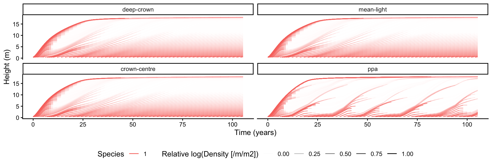
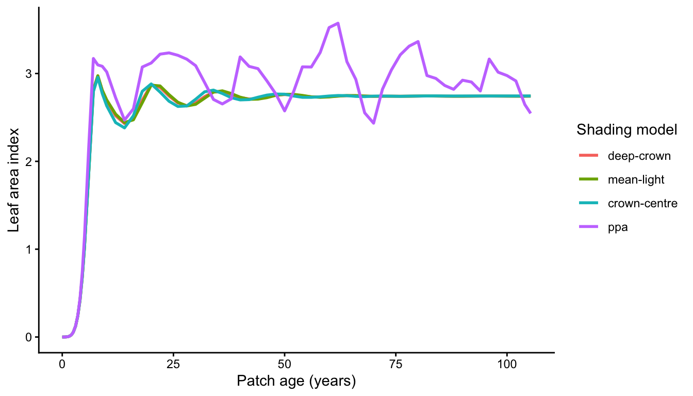
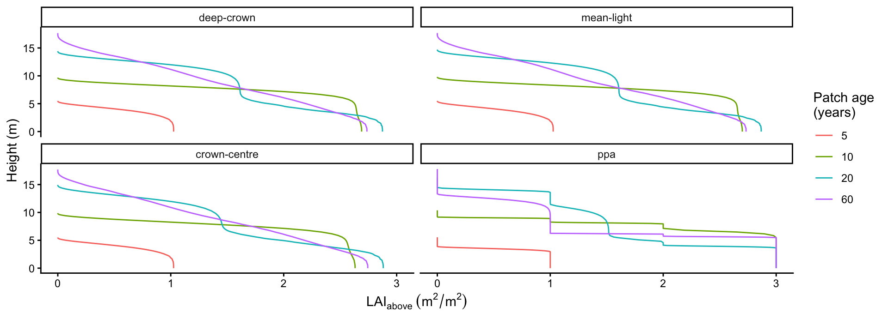
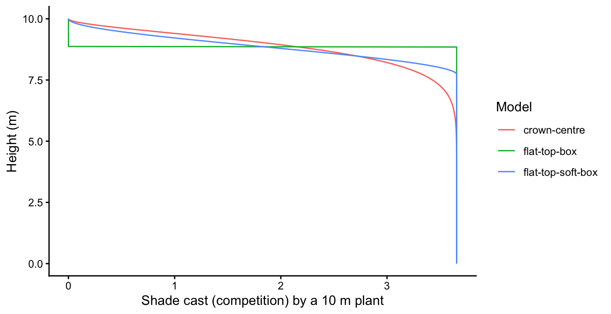

library(plant)
library(dplyr)
library(ggplot2)
library(patchwork)Canopy & light-environment models
implementation
This page documents the canopy / shading models that plant implements: what the six models are, how each computes the light environment a plant experiences, the realism-versus-speed tradeoff between them, and why the perfect-plasticity approximation (PPA) requires smoothing to run in plant’s adaptive solver. It is an implementation reference for the current code.
Background
Light interception, and why it matters
Light is the currency of competition in a forest. A plant’s carbon gain depends on the light its leaves intercept, and that light has been filtered twice: by the crowns of taller neighbours above it, and by the plant’s own leaves higher in its crown (self-shading). plant captures this through a single shared object – the patch light profile \(E(z)\), the fraction of open-sky light reaching height \(z\). Every plant both reads this profile (to photosynthesise) and contributes to it (the shade its leaves cast lowers \(E\) below them).
Getting the light profile right is not a detail. It sets each plant’s growth rate, which sets the size structure of the stand, which sets the competitive hierarchy, which ultimately decides which strategies persist and which traits selection favours. Errors here propagate all the way up to the ecological and evolutionary predictions the model exists to make.
Realism versus speed
A fully realistic treatment would resolve the light field through each crown and integrate photosynthesis over it. That is expensive – especially when the leaf-level photosynthesis model is itself costly (as in TF24, whose coupled stomatal/hydraulic optimisation is far heavier than a simple light-response curve). The classic response is to simplify: treat the crown as a single point, or the canopy as a few discrete layers – trading fidelity for speed. plant lets you choose where to sit on that spectrum. The job of this page is to describe what each simplification does, because, as the model comparison shows, a model can be perfectly adequate for one question and badly wrong for another.
The models
The FF16 strategy offers six shading models, selected with control$shading_model. Four of them share the same per-plant competition – the smooth Yokozawa leaf-area profile – and differ only in how a plant’s own assimilation is computed (and, for PPA, how the light profile is assembled):
"deep-crown"(the default) – the originalplantbehaviour. Leaf area is distributed continuously through the crown following the Yokozawa (1995) foliage profile, and a plant’s gross assimilation is computed by integrating photosynthesis over crown depth against the light profile. The patch light profile is a smooth function of height."crown-centre"– the light profile is built exactly as for"deep-crown", but a plant’s assimilation is approximated by a single evaluation of the light at its crown centre rather than an integral over depth. This skips the per-plant quadrature, so it is faster, and removes within-crown self-shading."mean-light"– partway between deep-crown and crown-centre. Rather than integrating the photosynthetic rate over depth, it integrates the light over depth (weighted by leaf-area density) to a single leaf-area-weighted mean light, then takes one photosynthesis evaluation of that mean. It therefore still feels the within-crown change in light environment – and how that environment shifts as the canopy develops – but collapses the expensive photosynthesis calculation to a single call per plant rather than one per crown depth. For FF16 that saving is modest (its leaf photosynthesis is a cheap saturating function), but it becomes important for models with an expensive leaf submodel: theTF24strategy’s coupled stomatal/hydraulic optimisation is far more costly to evaluate, so integrating the light and optimising once is the natural choice there. The cost is bias: because photosynthesis saturates with light, evaluating the rate at the mean light overestimates the depth-averaged rate (Jensen’s inequality). So"mean-light"always gives at least as much assimilation as"deep-crown", the two agreeing only when the within-crown light is uniform."ppa"– the perfect-plasticity approximation, the scheme that underlies large models such as FATES. The patch light profile is discretised into discrete canopy layers: light steps down by a fixed amount of optical depth (control$ppa_layer_optical_depth) per layer. Assimilation is evaluated at the crown centre as in"crown-centre", but now reads this stepped profile. Because a hard step is not differentiable (and makes the ODE solver fail), the layer boundaries are smoothed with a C1-continuous ramp whose width is set bycontrol$ppa_layer_smoothing. This gives two variants of the one"ppa"model, exactly paralleling the Flat Top pair below: PPA (hard step) (ppa_layer_smoothing = 0) is the literal field discretisation (e.g. Strigul 2008, FATES) – discontinuous, and it does not run inplant’s adaptive solver – while PPA (smoothed) (ppa_layer_smoothing > 0, default0.3) is the runnable version.
Two further models instead change the competition itself – the shade a plant casts – collapsing its leaf area towards a thin crown-centre layer rather than spreading it through the crown. This discrete-layer view is close to how many large vegetation models (e.g. LPJ-GUESS) represent canopy competition, so it is worth taking seriously rather than dismissing:
"flat-top-box"– the shade cast is a hard step: full below the crown centre, none above. Summed over cohorts this makes the patch light profile discontinuous, and inplantthe stand then cannot be solved at all."flat-top-soft-box"– the same box competition with the step smoothed to a continuous drop, so the light environment can be built. It runs, but the mis-shaped shade biases its predictions.
The model is resolved once when a strategy is prepared, so there is no per-call cost to having the choice available. The TF24 strategy supports "deep-crown", "mean-light" (its default) and "crown-centre", but not the PPA or box variants.
Simulating a patch under each model
We grow a single FF16 species in a patch, and run the same patch under each of the four smooth-competition models. Everything except control$shading_model is held fixed, so any differences are due to the shading model alone.
params <- scm_base_parameters("FF16")
patch <- expand_parameters(trait_matrix(0.0825, "lma"), params)
models <- c("deep-crown", "mean-light", "crown-centre", "ppa")
run_model <- function(model) {
ctrl <- Control()
ctrl$shading_model <- model
run_scm(patch, ctrl = ctrl, collect = TRUE)
}
results <- lapply(models, run_model)
names(results) <- modelsEach run returns the full collected state (run_scm(collect = TRUE)): a tidy species table (one row per node per step) and the light environment (env$light_availability). We tag each run’s species table with its shading model and bind them together so we can use plant’s tidy helpers across all four.
species_all <- dplyr::bind_rows(
lapply(models, function(m) dplyr::mutate(results[[m]]$species, method = m))
)
species_all$method <- factor(species_all$method, levels = models)
# Light-extinction coefficient, used throughout to convert canopy openness to
# cumulative leaf area: E = exp(-k_I * LAI), so LAI_above = -log(E) / k_I.
k_I <- results[[1]]$p$strategies[[1]]$k_IStand dynamics
The least demanding test of a shading model is whether a stand develops sensibly. We look at three views of the same patch as it grows and self-thins: the size distribution, the leaf area index, and the vertical light profile.
Size distribution
The size distribution is the set of node height trajectories: each line is a cohort introduced at a given patch age and followed as it grows, with line opacity scaled by the cohort’s density (faint lines are sparse cohorts). plant’s plot_size_distribution() builds this directly from the tidy species table; faceting by method compares the shading models.
p_size <- plot_size_distribution(species_all) +
facet_wrap(~method) +
theme(legend.position = "bottom")
p_size
The discrete layering in "ppa" produces visibly different growth trajectories: cohorts grow at near-constant light within a layer, then accelerate as they emerge into a brighter layer.
Leaf area index
Leaf area index (LAI) – the total one-sided leaf area per unit ground – is the cumulative leaf area above the ground, which is already encoded in the recorded light profile: with Beer’s law \(E = \exp(-k_I\,\mathrm{LAI})\), the patch LAI is just \(-\log E(0) / k_I\), where \(E(0)\) is canopy openness at ground level. This reads straight off env$light_availability and needs no integration over the size distribution. (LAI is real leaf area, so the smooth recorded profile gives the true value for all four models – the PPA layering only affects the light plants experience, not the leaf area present.)
lai_all <- dplyr::bind_rows(
lapply(models, function(m) {
results[[m]]$env$light_availability |>
dplyr::group_by(time) |>
dplyr::slice_min(height, n = 1, with_ties = FALSE) |>
dplyr::ungroup() |>
dplyr::transmute(method = m, time, lai = -log(light_availability) / k_I)
})
)
lai_all$method <- factor(lai_all$method, levels = models)p_lai <- ggplot(lai_all, aes(time, lai, colour = method)) +
geom_line(linewidth = 1) +
labs(x = "Patch age (years)", y = "Leaf area index", colour = "Shading model") +
theme_classic()
p_lai
"deep-crown", "mean-light" and "crown-centre" track each other closely and settle to a steady LAI: under a near-uniform light profile, all three ways of summarising within-crown light give similar carbon gain (with "mean-light" and "crown-centre" running slightly richer, since they do not fully resolve self-shading). The "ppa" model instead shows large, sustained oscillations – successive waves of recruitment and self-thinning – because the discrete light layers create sharp thresholds for cohort success (visible as the pulses of emerging cohorts in the size-distribution panel above).
Vertical light profile
We can also look within the canopy at a few patch ages, at the vertical profile of cumulative leaf area above each height – \(\mathrm{LAI}_{above}(z) = -\log E(z) / k_I\), where \(E\) is canopy openness. This is the quantity that sets how much each individual is shaded.
The recorded env$light_availability is the smooth underlying profile shared by all models. The light that plants actually experience under PPA is the stepped version, so for the "ppa" panel we apply the same layering transform used internally (see FF16_Environment::step_light).
d <- Control()$ppa_layer_optical_depth # layer thickness (optical depth)
w <- Control()$ppa_layer_smoothing # boundary smoothing fraction
# C1-smoothed staircase: flat over the lower (1 - w) of each layer, cubic ramp
# over the top w. Mirrors FF16_Environment::smooth_floor() / step_light().
smooth_floor <- function(u, w) {
n <- floor(u)
f <- u - n
t <- pmax(0, f - (1 - w)) / w
n + ifelse(f <= 1 - w, 0, t^2 * (3 - 2 * t))
}
ppa_step_light <- function(E, d, w) {
ifelse(E >= 1 | E <= 0, E,
exp(-d * smooth_floor(-log(E) / d, w)))
}
target_ages <- c(5, 10, 20, 60)
profile_all <- dplyr::bind_rows(
lapply(models, function(m) {
light <- results[[m]]$env$light_availability
if (m == "ppa") {
light$light_availability <- ppa_step_light(light$light_availability, d, w)
}
# nearest recorded step to each target age
steps <- results[[m]]$steps
keep <- sapply(target_ages, function(a) steps$step[which.min(abs(steps$time - a))])
light |>
dplyr::filter(step %in% keep) |>
dplyr::mutate(method = m,
age = target_ages[match(step, keep)],
lai_above = -log(light_availability) / k_I)
})
)
profile_all$method <- factor(profile_all$method, levels = models)p_profile <- ggplot(profile_all,
aes(lai_above, height, colour = factor(age), group = age)) +
geom_path() +
facet_wrap(~method) +
labs(x = expression(LAI[above]~(m^2/m^2)), y = "Height (m)",
colour = "Patch age\n(years)") +
theme_classic()
p_profile
"deep-crown", "mean-light" and "crown-centre" share an identical smooth profile (they build the light environment the same way and differ only in how assimilation is evaluated); "ppa" shows the characteristic staircase, with cumulative leaf area held constant within a layer and jumping at each layer boundary.
Computational cost
Speed is the whole reason the simpler models exist. A single patch is cheap, but plant is usually run thousands of times over – sweeping traits, fitting to data, or computing fitness landscapes – so the per-run cost compounds, and shaving the most expensive inner calculation is worthwhile. This is the payoff side of the realism-versus-speed trade.
How much you save depends on two competing effects, and on a feature that is relatively unusual in vegetation models: plant integrates the patch with an adaptive ODE solver, which chooses its own step sizes (large where the dynamics are smooth, small only where they are not) to hit a requested accuracy cheaply. So the cost of a model is set both by the work per step and by the number of steps the solver decides to take:
- Per step,
"deep-crown"is the most expensive – it performs a Gauss-Kronrod quadrature over crown depth for every individual – while"crown-centre"and"ppa"replace that with a single light evaluation. - Number of steps: a model whose light profile is smooth lets the solver stride; PPA’s near-stepped profile is much stiffer, forcing many more, smaller steps.
Which effect dominates depends on how the system is stepped, so we report both the adaptive cost (what you actually pay) and the per-step cost on a fixed schedule.
# Median wall-clock over a few repeats. `times = NULL` uses the adaptive solver;
# supplying a fixed schedule pins every model to the same steps.
time_model <- function(model, times = NULL, reps = 5) {
p <- patch
use_fixed <- !is.null(times)
if (use_fixed) p$ode_times <- times
ctrl <- Control()
ctrl$shading_model <- model
run1 <- function() run_scm(p, ctrl = ctrl, use_ode_times = use_fixed)
run1() # warm up
median(replicate(reps, system.time(run1())[["elapsed"]]))
}
speed_table <- function(timings) {
data.frame(
model = names(timings),
`median time (s)` = round(unname(timings), 4),
`relative to deep-crown` = round(unname(timings / timings[["deep-crown"]]), 2),
check.names = FALSE,
row.names = NULL
)
}Adaptive solver (real-world cost)
This is how plant runs by default, and the cost you actually pay. The adaptive solver is part of what makes plant efficient: it spends steps only where the dynamics demand them. But it also means a model’s cost is not just its per-step work – a model that makes the dynamics harder to integrate pays for it in extra steps. (Most large vegetation models instead march on a fixed timestep, where this consideration simply does not arise; we return to that below.)
timings_adaptive <- vapply(models, time_model, numeric(1))
knitr::kable(speed_table(timings_adaptive))| model | median time (s) | relative to deep-crown |
|---|---|---|
| deep-crown | 0.063 | 1.00 |
| mean-light | 0.060 | 0.95 |
| crown-centre | 0.041 | 0.65 |
| ppa | 0.204 | 3.24 |
"crown-centre" is fastest – it shares deep-crown’s smooth light profile (so the same number of solver steps) but skips the per-plant crown-depth integral. "mean-light" costs about the same as "deep-crown": it also integrates over crown depth (just the light rather than the rate), so the per-step work and the step count are both similar. "ppa" is slower overall despite the cheaper per-plant assimilation, because its near-stepped profile forces the adaptive solver to take many more steps; finer layers (smaller ppa_layer_optical_depth) or sharper boundaries (smaller ppa_layer_smoothing) make this worse.
Fixed ODE schedule (per-step cost)
If instead every model is pinned to the same fixed schedule (run_scm(..., use_ode_times = TRUE)), the step-count effect is removed and only the per-step cost remains. Now PPA’s advantage shows: like "crown-centre", it skips the crown-depth quadrature, so both are markedly faster than "deep-crown".
times <- seq(0, params$max_patch_lifetime, length.out = 4000)
timings_fixed <- vapply(models, time_model, numeric(1), times = times)
knitr::kable(speed_table(timings_fixed))| model | median time (s) | relative to deep-crown |
|---|---|---|
| deep-crown | 1.581 | 1.00 |
| mean-light | 1.557 | 0.98 |
| crown-centre | 0.934 | 0.59 |
| ppa | 1.062 | 0.67 |
So PPA is not inherently slow – on a fixed schedule it is faster than "deep-crown". Its apparent cost under the adaptive solver comes entirely from the extra steps the stiff profile demands. This is also why discrete-layer schemes are unproblematic in the large models that use them: those models march on a fixed timestep, so a stepped, stiff light profile costs nothing extra and the difficulty never surfaces. It is plant’s adaptive solver that makes the stiffness visible – and, as the next section shows, a hard step visible as outright failure. "deep-crown" nonetheless remains the default here: it is the most faithful representation of within-crown light capture and carries no speed penalty relative to earlier versions of plant.
Why PPA needs smoothing
A literal PPA discretisation is a hard step function: as a plant grows and its crown centre crosses a layer boundary, the light it experiences jumps discontinuously, and so does its growth rate. This is what ppa_layer_smoothing exists to tame, and it is worth being explicit about why – because the problem is specifically one of adaptive ODE stepping, not of the model itself.
Adaptive stepping cannot integrate a discontinuity
plant solves the patch dynamics with an adaptive, error-controlled solver (an embedded Runge-Kutta scheme). At each step it forms two estimates of the state at different orders, and uses their difference as an estimate of the local truncation error. If that error exceeds the requested tolerance, the step is rejected and retried with a smaller size; the method assumes the solution is smooth, so halving the step should roughly quarter the error.
Across a discontinuity that assumption breaks. No matter how small the step, a step that straddles the jump carries an O(jump) error that never falls below tolerance, so the solver rejects and shrinks the step indefinitely until it gives up. With a hard step (ppa_layer_smoothing = 0) this is exactly what happens:
ctrl_hard <- Control()
ctrl_hard$shading_model <- "ppa"
ctrl_hard$ppa_layer_smoothing <- 0 # hard step, no smoothing
tryCatch(
run_scm(patch, ctrl = ctrl_hard),
error = function(e) conditionMessage(e)
)[1] "Cannot achieve the desired accuracy"A fixed schedule (run_scm(..., use_ode_times = TRUE)) sidesteps the error-control loop – it simply takes the prescribed steps without rejecting any – but then nothing protects against a large explicit step overshooting the jump, which sends growth to non-finite values unless the schedule is very fine. Either way, a hard step is not something the solver can handle robustly.
Switching the rounding direction (light at the top vs the bottom of a layer) does not help: the difficulty is the discontinuity itself, not where the step sits.
The smoothed profile
ppa_layer_smoothing replaces each hard boundary with a C1-continuous cubic ramp over the top fraction of the layer (see FF16_Environment::smooth_floor). The light profile – and hence each plant’s growth rate – is now continuous with a continuous first derivative, so the adaptive error estimate behaves as the solver assumes and steps are accepted normally. Even a small amount of smoothing is enough to recover a well-behaved integration, and with the default the adaptive and fixed-step solutions agree.
Two parameters control the discretisation:
ppa_layer_optical_depth– the optical-depth thickness of one layer (default0.5, i.e. one unit of leaf area index per layer at the default extinction coefficientk_I = 0.5). Smaller values give finer layering.ppa_layer_smoothing– the fraction of each layer over which the boundary is smoothed (default0.3). Values approaching0recover a hard step (and the instability above);1removes the flat region and approaches the smooth"deep-crown"-style profile. There is a tension here: smaller values are closer to a true PPA step but stiffer (slower, per the speed table above), while larger values integrate faster but blur the layer structure.
The competition profile
The four smooth-competition models above all build the same light environment – they differ only in how a plant summarises its own assimilation. The two box models instead change the shade a plant casts, collapsing its leaf area towards a thin crown-centre layer. This mirrors the discrete-layer competition of large vegetation models (e.g. LPJ-GUESS), so it is worth inspecting directly.
comp_profile <- function(model, height = 10) {
s <- FF16_Strategy()
s$control$shading_model <- model
ind <- FF16_Individual(s)
ind$set_state("height", height)
z <- seq(0, height, length.out = 400)
data.frame(model = model, z = z,
competition = sapply(z, function(zz) ind$compute_competition(zz)))
}
comp <- dplyr::bind_rows(
comp_profile("crown-centre"),
comp_profile("flat-top-box"),
comp_profile("flat-top-soft-box")
)
ggplot(comp, aes(competition, z, colour = model)) +
geom_path() +
labs(x = "Shade cast (competition) by a 10 m plant", y = "Height (m)",
colour = "Model") +
theme_classic()
The correct profile (crown-centre) tapers continuously to zero through the crown; the box profile is a step, and the soft box a continuous-but-wrong drop concentrated near the crown centre.
The hard step does not even run. Summed over a population of discrete cohorts, a step competition makes the patch light profile a discontinuous, piecewise-constant function of height, which the adaptive light-environment spline cannot represent – the model fails before a stand can develop:
ctrl_box <- Control()
ctrl_box$shading_model <- "flat-top-box"
tryCatch(
run_scm(patch, ctrl = ctrl_box),
error = function(e) conditionMessage(e)
)[1] "Interpolated function as refined as currently possible"The soft box runs (its continuous profile lets the light environment build), but the shade is mis-distributed through the canopy, which biases its predictions relative to the deep-crown reference.
What the comparison establishes
The full model comparison (see the reproduction below) puts these models through a ladder of increasingly demanding tests – stand dynamics, demographic equilibrium, invasion fitness, and the evolutionary endpoint. The recurring finding is that the cheap models are often fine for stand dynamics and acceptable for equilibrium, but invasion fitness is unforgiving. The key requirement it exposes is continuity of the shade each plant casts as a function of height: "deep-crown", "mean-light" and "crown-centre" all build a continuous light profile and behave well; PPA’s stepped profile and the box models’ mis-shaped competition do not. None of this means the large models are wrong to use discrete layers – for stand-level simulation on a fixed timestep the representation is fast, robust, and adequate. The caution is specific to the eco-evolutionary questions plant is built for.
The full model comparison and evolutionary analysis – demographic equilibrium, invasion-fitness landscapes, and the singular-strategy / work-precision results – is reproduced in the DunFalster 2026 canopy reproduction post.